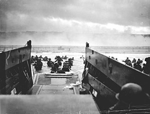
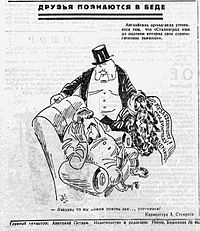
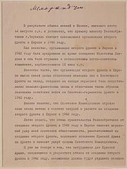
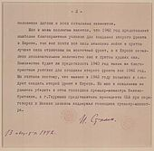
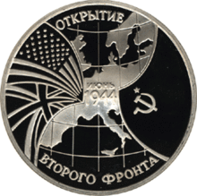

Западноевропейский театр военных действий Второй мировой войны
Западноевропейский театр военных действий Второй мировой войны
[править | править код]
Материал из Википедии — свободной энциклопедии
Перейти к навигацииПерейти к поиску
|
Западноевропейский театр военных действий Второй мировой войны |
|
Основной конфликт: Вторая мировая война |
|

Американские солдаты высаживаются вНормандии.
6 июня 1944 года |
|
Дата |
3 сентября 1939 — 8 мая 1945 |
|
Место |
Западная Германия, Франция, Бельгия, Нидерланды, Люксембург, Великобритания, Норвегия, Дания, Атлантический океан. |
|
Итог |
Победа Антигитлеровской коалиции |
|
Противники |
|
|
|
Командующие |
|
|
|
|
Аудио, фото, видео на Викискладе |
|
[показать]
Вторая мировая война |
|
[показать]
Западноевропейский театр военных действий Второй мировой войны |
Западноевропейский театр военных действий Второй мировой войны (1939—1945) — боевые действия, проходившие во время Второй мировой войны в Западной Европе и Атлантике.
Содержание
«Странная война» и начало в Атлантике (сентябрь 1939 — апрель 1940)[править | править код]
Основные статьи: Битва за Атлантику (1939—1945), Странная война
3 сентября 1939 года Великобритания и Франция объявили войну Германии. Эта была ответная мера на немецкое вторжение в Польшу[3]. С сентября 1939 и до весны 1940 года в Западной Европе велась так называемая «Странная война». Французская армия и высадившийся во Франции английский экспедиционный корпус, с одной стороны и немецкая армия — с другой, вяло обстреливали друг друга, не предпринимая активных действий. Затишье было ложным, так как немцы просто опасались ведения войны на «два фронта».
В начале войны Великобритания и Франция имели подавляющее превосходство над Германией как на суше, так и на море. Понимая экономическую зависимость Великобритании от её огромных владений в разных концах света, немецкое командование отрядило против британского грузового и торгового флота значительные силы. С первых дней войны немецкие корабли вышли «на охоту» за британскими судами в открытый океан и даже к берегам Латинской Америки и Африки. Первое крупное морское сражение произошло 13 декабря 1939 года в заливе Ла-Плата возле берегов Аргентины, где немцы потеряли крейсер «Адмирал граф Шпее», который до этого уничтожил 9 британских судов. Сражение известно как Битва у Ла-Платы.
Наступление стран Оси[править | править код]
Вторжение в Данию и Норвегию (апрель — июнь 1940)[править | править код]
Основная статья: Датско-норвежская операция
Утром 9 апреля 1940 года немецкие войска вторглись в нейтральные Данию и Норвегию с целью усиления германских позиций в Атлантике и Северной Европе, в качестве превентивной меры для недопущения аналогичных действий со стороны Великобритании и Франции и для захвата железорудных месторождений. «Странная война» кончилась, и союзники начали переходить к активным действиям. Немецкие силы высадили десант в гавань Копенгагена, король Кристиан X и датское правительство под угрозой бомбардировки были принуждены к капитуляции. Дания была объявлена протекторатом Германии. В Норвегии немцы выбросили десанты и захватили крупнейшие города: Осло, Тронхейм, Нарвик. Однако норвежское правительство отказалось капитулировать и призвало народ бороться с врагом. На помощь немногочисленной норвежской армии прибыли британские войска. Им удалось закрепиться на севере и вести отчаянную борьбу против превосходящей в количестве армии Германии. Попытки англо-норвежских войск выбить немцев из занятых ими пунктов привели к ряду боёв в районах Нарвика, Намсуса, Молле (Мольде) и др. Британские войска отбили у немцев Нарвик. Но вырвать стратегическую инициативу им не удалось. В начале июня они эвакуировались из Нарвика (См. Битва при Нарвике).
Вторжение во Францию (май — июнь 1940)[править | править код]
Основная статья: Французская кампания
10 мая 1940 года немецкие войска начали наступление на Францию, Бельгию, Нидерланды и Люксембург. За короткое время им удалось сломить сопротивление бельгийской армии. Силы союзников выдвинулись им на помощь в Бельгию. Тем временем вторая группировка немецких войск, которая изначально двигалась медленно, дав крупным англо-французским силам пройти в Бельгию, вторглась в Нидерланды и к 14 мая вынудила капитулировать голландскую армию. Крупные англо-франко-бельгийские силы оказались в окружении возле города Дюнкерк. Однако немцы не приняли быстрых действий для уничтожения этой группировки и союзникам удалось эвакуировать свои войска на Британские острова (см. Дюнкеркская операция). 26 мая Бельгия капитулировала. Французская армия, расположенная на линии Мажино, не ожидала наступления немцев в обход укреплений Линии Мажино через Арденны и оказалась не готова к обороне. Немцам удалось за короткое время разгромить две самые сильные французские армии, находившееся на этой линии и развернуть наступление в центр Франции. Спешно брошенные французским командованием плохо оснащённые войска не смогли сдержать наступления немецкой армии. 10 июня Италия объявила войну Франции и Великобритании, и это привело к открытию нового театра военных действий — Средиземноморского. Несмотря на численное превосходство, итальянские войска не смогли прорвать оборону французов на юге. 14 июня немецкие войска заняли Париж. 21 июня Франция подписала капитуляцию. 3/5 территории Франции отошли под контроль Германии. На оставшейся территории было создано марионеточное правительство генерала Петена. Небольшая часть территории Франции перешла к Италии (см. Германская военная администрация во Франции).
Битва за Британию (июль 1940 — май 1941)[править | править код]
Основная статья: Битва за Британию
Разгромив Францию, немцы пытались вынудить Великобританию к капитуляции и для этого начали массовые бомбардировки Британских островов. С июля 1940 года по май 1941 года продолжалось крупнейшее в истории авиационное сражение в небе над Британией. Немцам так и не удалось достигнуть поставленных целей, завоевать господство в воздухе и уничтожить британские ВВС. Далее воздушные бои между союзниками и люфтваффе проходили в небе над Западной Европой и западной частью Германии (в основном Рурский промышленный район), особенно стратегические бомбардировки. В это же время англичане потопили вышедший в Атлантику крупнейший немецкий линейный корабль «Бисмарк», после чего германское командование было вынуждено отказаться от дальнейших крейсерских действий с участием крупных боевых кораблей.
Затишье на западном фронте (май 1941 — июнь 1943)[править | править код]
Основные статьи: Битва за Атлантику (1939—1945), Битва за Дьеп, Арктические конвои

Карикатура Анатолия Стенроса в газете «За родину» № 16 (27.09.1942) пародирующая помощь союзников.


Меморандум Сталина об отказе открытия Второго фронта союзниками в 1942 году
После мая 1941 года на западном фронте наступило относительное затишье, боевые действия были перенесены в Северную Африку. Немцы перебросили значительную часть своих войск на восток и напали на СССР. Лишь авиация изредка бомбила Британские острова. В то же время наращивались масштабы подводной войны. Число немецких подводных лодок, действующих в Атлантике к середине 1941 годадостигло 170 единиц, а к концу года — 280. Из них в каждый момент примерно 40 % находились на базах для ремонта и обслуживания, 30 % — на пути на боевое дежурство или возвращались на базы, и только 30 % непосредственно участвовали в боевых действиях.
Одновременно изменилась тактика их действий. Вместо одиночных атак стала практиковаться тактика групповых атак («волчья стая»), при которой подводная лодка, обнаружившая караван судов противника, вызывала в район обнаружения до 10-20 подводных лодок для совместной атаки каравана с разных направлений. Эта тактика, дополненная действиями немецкой авиации привела к тяжёлым потерям английского торгового флота.
После вступления США во Вторую мировую войну Объединенный Комитет Начальников Штабов стал настойчиво предлагать как можно более скорое (в первой половине 1942 года) вторжение в Европу через пролив Ла-Манш. Однако, в то время США не могли провести подобную операцию самостоятельно, а Великобритания не поддержала это предложение, считая более рациональным — на тот момент — начало военных действий в Северной Африке[4].
Тем не менее, планы американских военных были всецело поддержаны правительством США, которое начало оказывать на Великобританию политическое давление с целью скорейшего получения согласия англичан на вторжение в Европу. В частности, в своем письме от 9 марта 1942 года Рузвельт писал Черчиллю следующее:
«Я становлюсь все более и более заинтересован в открытии этим летом нового фронта на Европейском континенте… С точки зрения транспорта и поставок нам будет безгранично легче принять в этом участие, поскольку максимальное расстояние составляет всего около трех тысяч миль. И хотя потери, вне всякого сомнения, будут высокими, они будут компенсированы, по меньшей мере, такими же потерями Германии, а также тем, что Германия будет вынуждена отвлечь с Русского фронта крупные силы всех родов войск».
Через месяц в Англию прибыли генерал Дж. Маршалл и Г. Гопкинс с задачей получения согласия её руководства на реализацию одного из двух подготовленных американцами планов высадки в оккупированной Франции — плана «Облава» (Operation Roundup) или плана «Кувалда» (Operation Sledgehammer). Первый предусматривал высадку не позднее апреля 1943 года силами 48 дивизий, а второй предусматривал начало активных действий ранней осенью 1942 года в случае, если либо Германия, либо СССР окажутся на краю поражения в войне[5].
19 августа 1942 года британские и канадские войска неожиданно атаковали французский город Дьеп. Немцы отбили эту атаку, нанеся союзникам тяжёлые потери, однако те извлекли опыт проведения десантной операции, который помог им в дальнейшем в открытии второго фронта.
В марте 1943 года подводные лодки достигли особенно значимых успехов. Успешная атака объединённых конвоев SC-122 и HX-229, в которой было потоплено 21 судно (141 000 брт) заставило британское руководство сомневаться в надёжности конвойной системы, однако уже в мае был достигнут перелом в битве за Атлантику в пользу союзников, связанный с усилением ВМС США и Великобритании в Центральной Атлантике (общая группировка их флотов достигла 3000 кораблей и 2700 самолётов), появлением большого количества эскортных авианосцев с самолётами, несущими радары нового типа. Состав немецких подводных лодок в этом районе снизился до 100—150 единиц. К тому же основные усилия немецкого флота были перенесены в Северную Атлантику для борьбы с морскими перевозками Союзников в СССР, а потери их подводных лодок резко возросли (только весной 1943 года было потоплено 67 немецких подводных лодок).
Наступление союзников (в том числе «Второй фронт») (1943—1945)[править | править код]
Итальянская кампания, июль 1943[править | править код]
Основные статьи: Сицилийская операция, Высадка в Италии, Битва под Монте-Кассино, Перемирие между Италией и Союзниками во Второй мировой войне
10 июля 1943 года союзники высадились на Сицилии, а 3 сентября в Италии. Сицилийская операция или Операция «Хаски» — одна из стратегических военных операций Второй мировой войны, во время которой войска союзников разгромили войска стран Оси (Италии и Германии) на Сицилии и захватили остров. Высадка явилась широкомасштабной военно-десантной операцией, за которой последовали шесть недель сражений на суше. Считается началом Итальянской кампании союзников.
Операция «Хаски» началась ночью 9 июля и окончилась 17 августа 1943 года; на момент проведения это была крупнейшая морская десантная операция. Командование союзников в будущем использовало опыт высадки на Сицилии для осуществления последующей ещё более грандиозной десантной операции — высадки в Нормандии, которая до сих пор остаётся крупнейшей десантной операцией в истории.
Стратегическая операция достигла поставленных союзниками целей: сухопутные, военно-воздушные и военно-морские войска стран Оси были выбиты с острова, средиземноморские морские пути были открыты, итальянский диктатор Бенито Муссолини был отстранён от власти, началась высадка в Италии.
«Второй фронт»: Франция, июнь 1944[править | править код]
Основные статьи: Нормандская операция, Южно-французская операция, Операция Маркет-Гарден, Прорыв линии Зигфрида

Монета Банка России — Серия: «Великая Отечественная война», 50-летие Победы в Великой Отечественной войне, Открытие второго фронта, 3 рубля, реверс.
6 июня 1944 американские, британские и канадские войска под командованием генерала Эйзенхауэра начали высадку в Нормандии(Северная Франция). Обычно это называют «открытием второго фронта в Европе». К концу июля союзники заняли плацдарм шириной около 100 км и до 50 км в глубину. 25 июля союзники перешли в наступление, нанося главный удар из района Сен-Ло. 7 августа немцы попытались нанести контрудар с целью отрезать от баз снабжения прорвавшиеся в Бретань американские части, однако он не имел успеха. Американо-канадские войска нанесли поражение главным силам нормандской группировки немцев под Фалезом, разгромив здесь 6 дивизий. 15 августа американо-французские войска высадились на побережье Южной Франции. Немецкие войска оказали слабое сопротивление и, так как общая обстановка на Западном фронте складывалась для них неудачно, 19 августа начали отходить с территории Южной Франции. На оккупированных территориях активизировались действия французских партизан. 25 августа союзники при поддержке партизан освободили Париж.
28 сентября немцы начали отходить с территории Северной Франции на укреплённую линию Зигфрида. Не сумев с ходу прорвать её, союзники попытались прорвать её обходом с севера через Нидерланды. 17 сентября в ходе Голландской операции (1944) года в Нидерландах были выброшены воздушные десанты. Однако наступление союзников продвигалось недостаточно быстро и лишь к 10 ноября войска 21-й группы армий очистили устье реки Шельды и вышли к Маасу от Граве до устья.
Операция в Арденнах (декабрь 1944 — январь 1945)[править | править код]
Основные статьи: Арденнская операция (1945), Эльзасско-Лотарингская операция, Кольмарская операция
В декабре немецкое командование предприняло попытку провести контрнаступление в Арденнах. Оно намеревалось ударом на Антверпен рассечь англо-американские войска и разгромить их. 16 декабря началось немецкое наступление, которое закончилось провалом к 25 декабря — немцы смогли продвинуться на 90 км, но не достигли переправ через реку Маас. К этому моменту погода, до этого препятствующая действиям авиации союзников, улучшилась, и они немедленно этим воспользовались. Американская авиация начала бомбардировки позиций немецких войск и их линий снабжения. Союзниками в Арденны были переброшены подкрепления, 22 декабря 3-я американская армия генерала Паттона начала контрнаступление во фланг немецкой группировке, и к 24 декабря 1944 немцев удалось остановить. К 27 декабря часть немецких войск попала в окружение, остальные начали отступать, а союзники начали контрнаступление. Стратегическая инициатива безвозвратно перешла к союзникам. 1 января 1945 немецко-фашистские войска предприняли локальные контратаки в районе Страсбурга с целью отвлечения сил союзников. Но это не только не помогло исправить положения, но даже ухудшило положение немецких войск. В результате Эльзасско-Лотарингской операции в окружение попала 19-я немецкая армия — Кольмарский «котёл». Союзники к концу января ликвидировали арденнский «выступ» и начали вторжение на территорию Германии. 9 февраля американские и французские войска ликвидировали эту окружённую группировку и заняли весь западный берег Рейна в Эльзасе (Кольмарская операция).
Завершение войны, разгром Германии (январь — май 1945)[править | править код]
Основные статьи: Маас-Рейнская операция, Центрально-Европейская операция
В первой половине марта 1945 германские войска были вынуждены отойти за Рейн. Преследуя их, американские, английские и французские войска вышли к Рейну и создали плацдармы под Ремагеном и южнее Майнца. Командование союзников решило нанести два удара в общем направлении на Кобленц, чтобы окружить немецко-фашистскую группу армий «Б» в Руре. В ночь на 24 марта союзники форсировали на широком фронте Рейн, обошли с юго-востока Рур и в начале апреля окружили 29 немецких дивизий и одну бригаду. Германский Западный фронт перестал существовать, а вермахт потерял важнейший военно-промышленный район Германии — Рур.
12 апреля американцы вышли к Дессау, где располагались два последних пороховых завода, которые пришлось взорвать. Теперь немецкие солдаты могли рассчитывать только на старые запасы боеприпасов.
Англо-американские войска продолжали быстрое наступление на всех направлениях. Во второй половине апреля — начале мая союзники достигли Эльбы, заняли Эрфурт, Нюрнберг, вступили в Чехословакию и в западную Австрию. 25 апреля американские части встретились с советскими войсками у Торгау. В начале мая английские войска достигли Шверина, Любека и Гамбурга. Союзники захватили весь юг Германии и западную часть Австрии.
4 мая 1945 года 7-я американская армия перешла через Альпы и встретилась на Бреннерском перевале в Италии с войсками союзников 5-й американской армии из 15-й группы армий, наступавших из Северной Италии.
8 мая немецкий генерал Альфред Йодль подписал «Предварительный протокол о капитуляции Германии». Война в Европе закончилась.
В культуре[править | править код]
кинематограф
- «Самый длинный день» (США, 1962)
- «Битва за Выступ» («Battle of the Bulge») (США, 1965)
- «Мост слишком далеко» (США, 1977)
- «Спасти рядового Райана» (США, 1998)
- «Когда молчат фанфары» (США, 1998)
- «Братья по оружию» (телесериал, 2001)
- «Война Харта» (2002)
- Поля сражений: Западный Вал / Battlefield: The West Wall (США, 2002)
- Второй фронт (фильм) (США-Россия, 2005)
- «Indigènes» (Франция, 2006)
- «Ярость» (США, 2014)
- «Дюнкерк» (2017)
Интересные факты[править | править код]
- В 1942 году Сталин пригласил посла США Гарримана и прибывшего в СССР помощника президента Гарри Гопкинса посмотреть вместе с ним фильм «Волга, Волга». Гостям фильм понравился, и Сталин, якобы в знак особого расположения, подарил через Гопкинса президенту Рузвельту копию фильма. Рузвельт посмотрел фильм и не понял, почему Сталин прислал именно его. Тогда он попросил перевести слова песен. Когда прозвучала песня, посвящённая пароходу «Севрюга»: «Америка России подарила пароход: / С носа пар, колёса сзади, / И ужасно, и ужасно, / И ужасно тихий ход», он воскликнул: «Вот теперь понятно! Сталин упрекает нас за тихий ход, за то, что мы до сих пор не открыли второй фронт»[6].
См. также[править | править код]
Примечания[править | править код]
- ↑ Итало-греческая война
- ↑ Сражение при Римини
- ↑
Ни французы, ни англичане никогда бы не сделали Польшу причиной войны, если бы не постоянное подстрекательство из Вашингтона. Летом 1939 г. президент непрерывно предлагал мне подложить горячих углей под зад Чемберлену.
— Американский посол в Англии в 1938—39 гг. Джозеф Кеннеди (The Forrestal Diaries, New York, 1951, p 121—122; «История Второй мировой войны» в 12 томах, т. 2, с. 345)
- ↑ Mackenzie, S. P. The Second World War in Europe : Second Edition.. — 2nd ed. — Hoboken: Taylor and Francis, 2014. — 1 online resource (185 pages) с. — ISBN 1317864719.
- ↑ Matloff, Maurice. Strategic Planning for Coalition Warfare 1943-1944. — Center of Military History United States Army, 1990.
- ↑ «Люба-любушка, красавица народная». Газета «Время» № 159 (16107), 4.09.2008, стр. 4
Категории:
Навигация
- Вы не представились системе
- Обсуждение
- Вклад
- Создать учётную запись
- Войти
- Читать
- Править
- Править код
- История
Поиск
- Заглавная страница
- Рубрикация
- Указатель А — Я
- Избранные статьи
- Случайная статья
- Текущие события
Участие
- Сообщить об ошибке
- Сообщество
- Форум
- Свежие правки
- Новые страницы
- Справка
- Пожертвовать
Инструменты
- Ссылки сюда
- Связанные правки
- Служебные страницы
- Постоянная ссылка
- Сведения о странице
- Цитировать страницу
Печать/экспорт
- Создать книгу
- Скачать как PDF
- Версия для печати
В других проектах
На других языках
Ещё 35
Править ссылки
- Политика конфиденциальности
- Описание Википедии
- Отказ от ответственности
- Свяжитесь с нами
- Разработчики
- Соглашение о cookie
- Мобильная версия